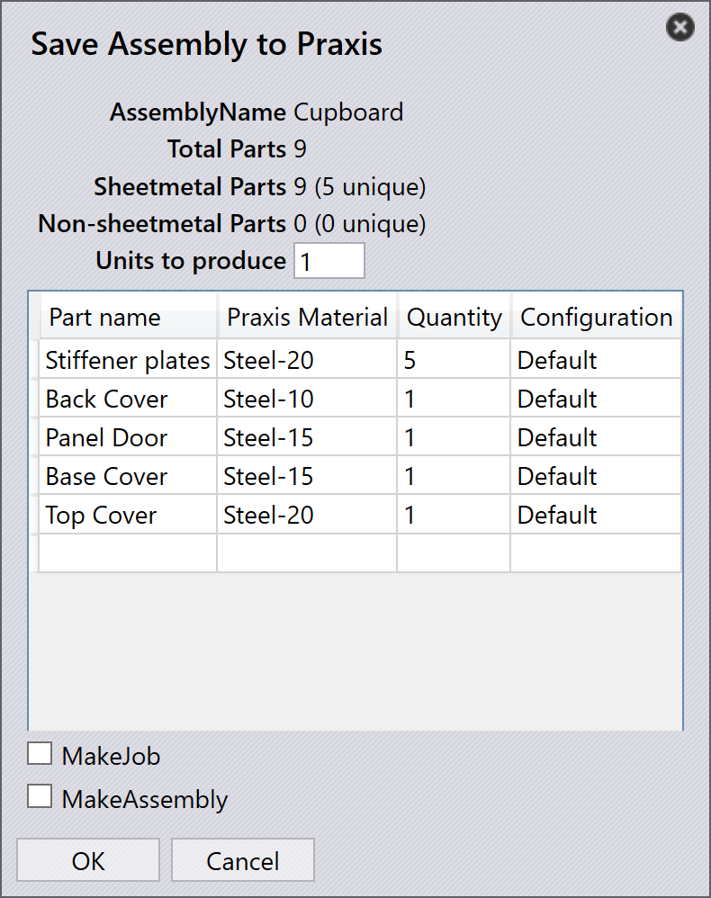

Save assembly
The Save Assembly feature allows users to export SolidWorks assemblies and their component parts directly into the TruSmartCAM part library. This ensures that all sheet metal parts, raw material information, and part quantities are accurately transferred for downstream planning, tooling, and job creation.
This functionality is particularly useful for managing complete assemblies such as cabinets, enclosures, or structural fabrications that involve multiple sheet metal components.
Steps to save an assembly
-
Launch SolidWorks and open the required assembly file.

-
On the TruSmartCAM toolbar, click Save Assembly. The Save Assembly to TruSmartCAM dialog appears, summarizing the assembly details.

-
The assembly dialog provides the following information:
-
Assembly Name - Displays the name of the currently active SolidWorks assembly. This name is used as the default reference for the assembly in TruSmartCAM.
-
Total parts - Indicates the total number of component instances present in the SolidWorks assembly. This includes both sheet metal and non-sheet metal parts.
-
Sheetmetal Parts - Displays the total number of sheet metal components in the assembly, along with the count of unique sheet metal parts.
-
Non-sheetmetal Parts - Lists the total count and unique number of non-sheet metal components detected in the assembly.
-
Units to produce - Specifies the number of assemblies (finished products) to be produced. The entered quantity is used to calculate the total part requirements in the resulting job or assembly within TruSmartCAM.
-
-
After verifying the details, click OK.
-
TruSmartCAM saves all parts listed in the table to the part library, along with their associated material information. (For material mapping details, refer to the Automaterial resolution)

Additional options
Make job
-
Enable this option to create a new TruSmartCAM Job directly from the selected assembly, allowing immediate job planning and nesting operations.
-
When enabled, the New Job dialog appears, allowing you to specify:
-
Job Reference Name (default: assembly name).
-
Customer and Comments (optional).
-
Due Date, Priority, and Quantity for each part.
-
Additional parameters such as customer-specific settings or rotation values for each part.
-
Click OK to create and open the new job in TruSmartCAM.
-

Make assembly
Enable this option to save the assembly and its correct part quantities to the TruSmartCAM assembly page. Unlike the Make Job option, this does not open the New Job dialog during the process.


|